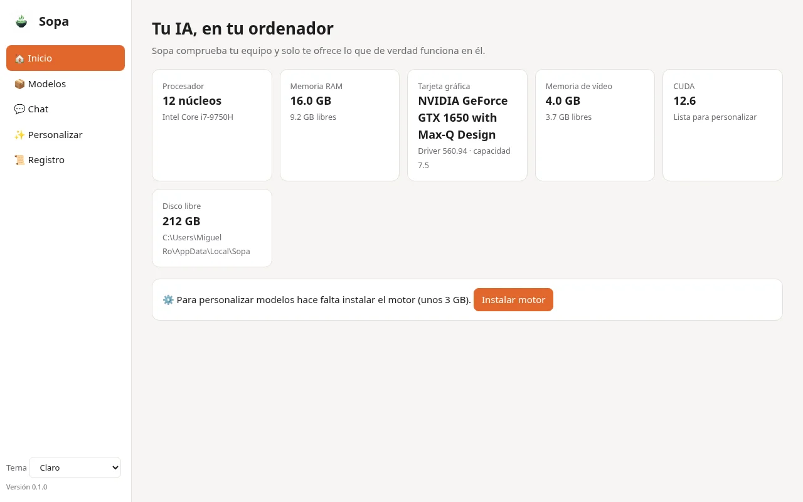
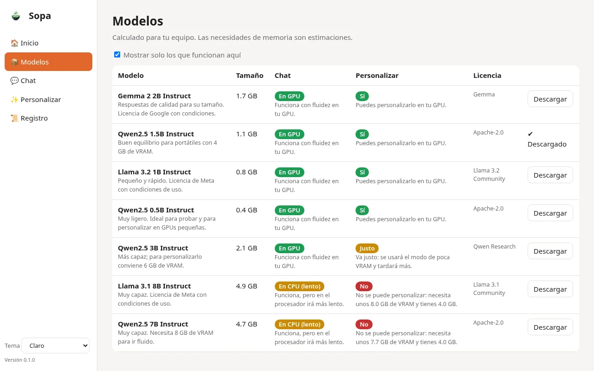
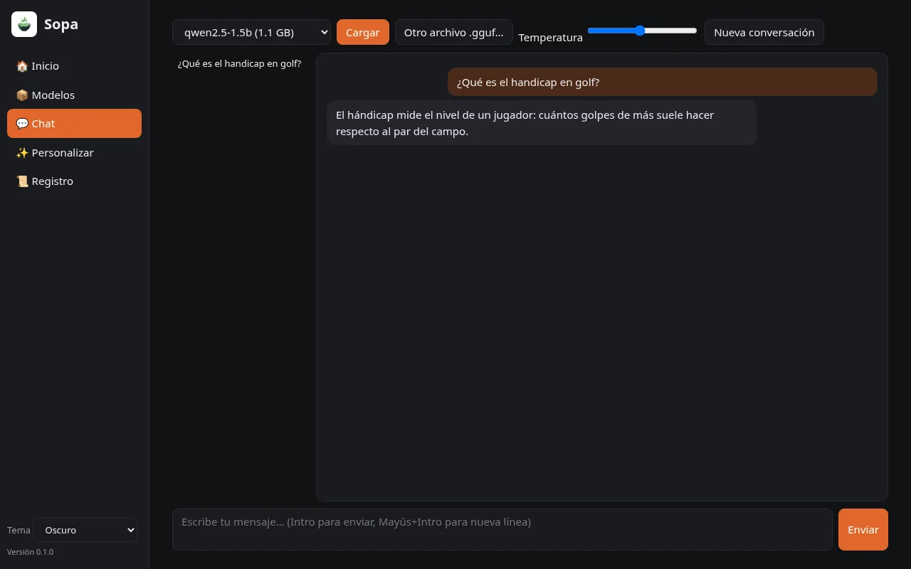

Conoce tu ordenador
Sopa detecta tu equipo y te dice qué modelos van bien: verificado, estimado o no soportado.

Inteligencia artificial local para Windows
La forma más sencilla de ejecutar IA en tu ordenador y personalizarla. Una IA local para Windows, todo en español y sin saber programar.

Privacidad
100 % local: tus conversaciones y tus datos se quedan en tu ordenador. Siempre.
Ya funciona
Sopa detecta tu equipo y te dice qué modelos van bien: verificado, estimado o no soportado.
Elige entre modelos verificados y Sopa se encarga del resto.
Habla con tu IA aunque no tengas internet.
Personaliza tu IA con tus propios textos. La configuración técnica (LoRA/QLoRA) se ajusta sola a tu hardware.
Exporta tu modelo a Ollama/GGUF.
Un diseño sereno, en tema claro u oscuro.


Rendimiento real
Medido en un portátil con una GTX 1650 de 4 GB.
En esa misma gráfica, Sopa personaliza modelos de hasta 3B. Los resultados varían según el equipo.
Catálogo
Modelos de lenguaje abiertos que funcionan en tu ordenador. Licencias abiertas; cada modelo con la suya.
Planes
Sopa se desbloquea con un archivo de licencia. Sin cuentas.
Gratis
Próximamente
Próximamente
Próximamente
Aún no está disponible. Lo estamos construyendo.
Haz preguntas sobre tus propios archivos, sin que salgan de tu equipo (RAG).
Chatea desde tu teléfono con la IA que funciona en tu ordenador, a través de la red de tu casa. Sin nube: tus conversaciones nunca salen de tus dispositivos.
Preguntas frecuentes
Es una inteligencia artificial que se ejecuta en tu propio ordenador, en lugar de en servidores de terceros. Con Sopa descargas un modelo de lenguaje (LLM) y conversas con él directamente en tu equipo Windows, en español y sin programar.
Sí. Sopa es 100 % local: tus conversaciones y tus datos no salen de tu equipo. No necesita cuentas, no usa telemetría y no depende de APIs de pago.
Un ordenador con Windows. Sopa analiza tu equipo y te indica qué modelos van bien: verificados, estimados o no soportados. Como referencia, en un portátil con una gráfica GTX 1650 de 4 GB conversa a 133 tokens/s con un modelo de 0.5B y personaliza modelos de hasta 3B.
Para conversar, no: el chat funciona sin conexión. Solo necesitas conexión para descargar los modelos. La nube nunca es obligatoria.
El plan Básico es gratis, con chat ilimitado y personalización limitada. Los planes Plus y Pro amplían las funciones; sus precios se anunciarán próximamente.
Versión actual 0.3, rumbo a la beta 0.9 y a la 1.0.